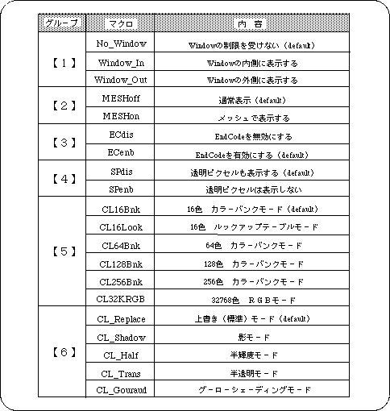

Return to previous page | Return to menu | Go to next page
The sixth parameter is “Mode”.
Here you can add various conditions and settings to the polygon. The macros that can be specified here are as follows.

You can specify one option for each group.
Use the or operator “|” for continuous notation.
Omitted groups are treated as if defaults were specified.
Caution
Not all groups can be abbreviated. If you want all to be the default, specify “No_Window” as a dummy.
The group [5] is for specifying the texture color mode, so be sure to set the default ("CL_16Bnk" or not specified) when not using the texture. If another mode is specified here, polygons will not be displayed.
As an exception for group [6], “CL_Gouraud |-CL_Half” and “CL_Gouraud |-CL_Trans” can be used. Use this when you want to use semi-luminous Gouraud shading, translucent Gouraud shading .
When using Gouraud shading, it is necessary to set “CL_Gouraud” here together with the setting of the fifth parameter.
When using semi-brightness, translucency, and Gouraud shading, only RGB direct and texture 32768 color RGB modes are supported for polygons. Note that other settings cannot be displayed correctly.